BioAmp Filter Designer#
Overview#
BioAmp Filter Designer is a Python-based desktop tool that generates ready-to-use digital filters for bio-potential signal processing applications such as ECG, EMG, EOG and EEG, for example when working with BioAmp Hardware. Pick a filter type, sampling rate, order and cutoff frequencies, choose a programming language, and the tool writes a complete Butterworth IIR filter class for you, along with an optional frequency response plot.
The generated filter is implemented as cascaded second-order sections (biquads) and comes as a class with process() and reset() methods, so you can create one object per channel for multi-channel signals.
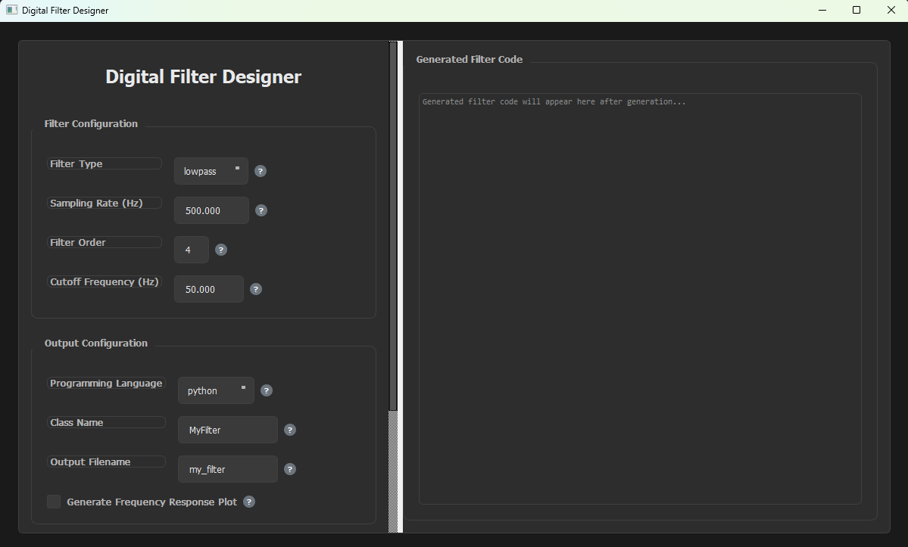
BioAmp Filter Designer#
Features#
Feature |
Description |
|---|---|
Four Filter Types |
Lowpass, highpass, bandpass and bandstop Butterworth filters. |
Five Output Languages |
Generate the filter as Python, JavaScript, TypeScript, C++ or Java code. |
Class-Based Output |
The filter is generated as a class, so multiple objects can be created for multi-channel signals. |
Frequency Response Plot |
Optionally save a frequency response image to check the filter before using it. |
Input Validation |
Cutoff frequencies are checked against the Nyquist frequency, and the low cutoff must be below the high cutoff. |
Built-in Help |
Every field has a |
Requirements#
Python 3.8 or higher
pip package manager (comes with Python)
Operating system: Windows / macOS / Linux
The Python packages the tool needs (numpy, scipy, matplotlib and PyQt5) are listed in requirements.txt and installed in the steps below.
Installation#
Clone the BioAmp Filter Designer repository, or download it as a ZIP from GitHub and extract it.
git clone https://github.com/upsidedownlabs/BioAmp-Filter-Designer.git
Open the project directory.
cd BioAmp-Filter-Designer
Create and activate a virtual environment to keep the dependencies isolated from your system Python.
python -m venv .venv
On Windows (PowerShell):
.venv\Scripts\activate
On macOS / Linux:
source .venv/bin/activate
Install the dependencies.
pip install -r requirements.txt
Run the application.
python GUI.py
This opens the Digital Filter Designer window.
Using the Application#
The controls are in the left panel, which you can scroll to reach the options at the bottom. The generated filter code appears in the right panel.
Select the Filter Type#
Choose what the filter should do:
lowpass blocks high frequencies and smooths the signal.
highpass blocks low frequencies and removes constant (DC) offsets.
bandpass allows only the frequencies within a range and blocks the rest.
bandstop blocks the frequencies within a range, for example to remove 50 Hz or 60 Hz mains noise.
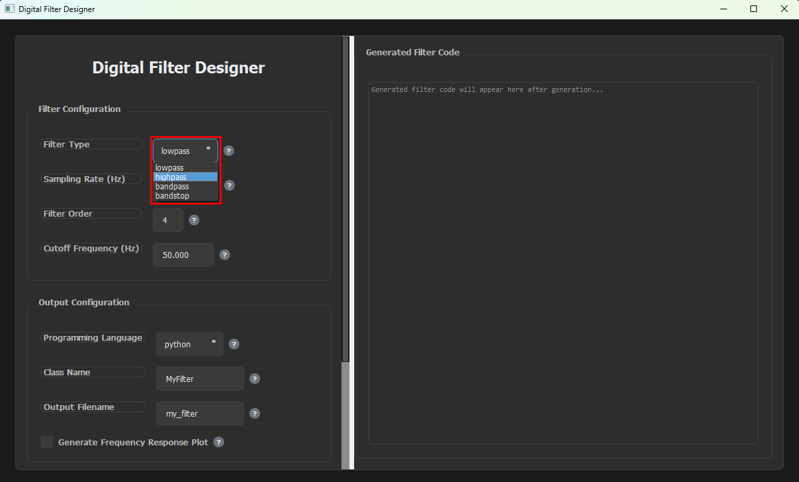
Select the Filter Type#
Enter the Sampling Rate#
Enter the rate at which your signal is sampled, in samples per second (Hz). It must be at least twice the highest frequency you care about (the Nyquist theorem), so every cutoff frequency you enter has to be below half of the sampling rate.
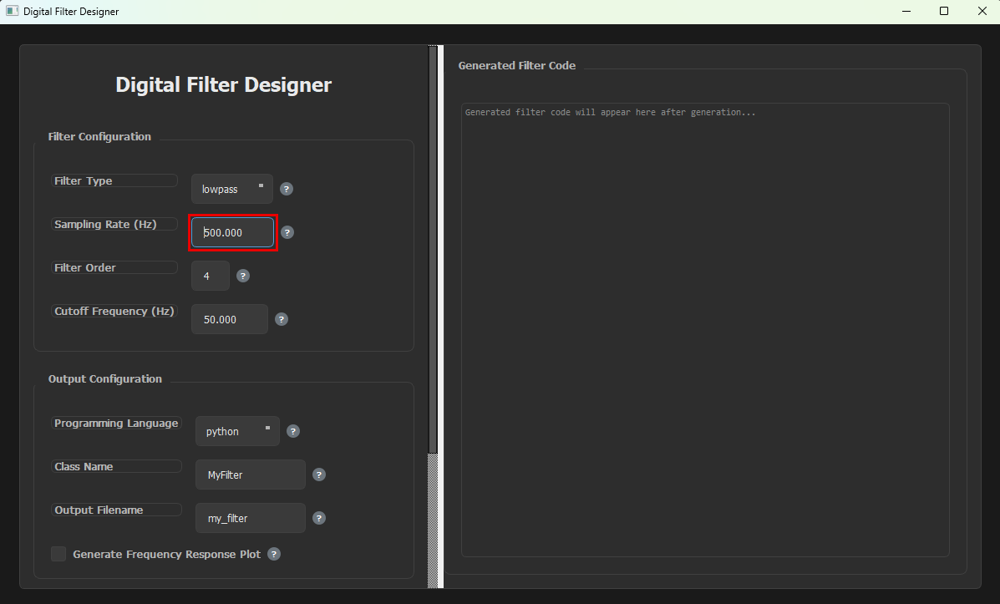
Enter the Sampling Rate#
Select the Filter Order#
The filter order sets how steeply the filter cuts off frequencies. A higher order gives a steeper roll-off but needs more computation, and 2 to 8 is typical for most applications.
You can use any whole number from 1 to 20 (the default is 4). It does not have to be even.
Note
For lowpass and highpass filters, the order you enter is the order of the filter. For bandpass and bandstop filters, it applies to each edge of the band, so the resulting filter has twice that order. For example, order 2 gives a 4th-order band filter made of two biquad sections.
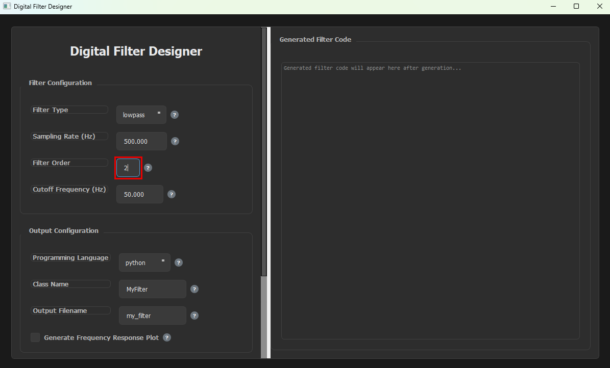
Select the Filter Order#
Enter the Cutoff Frequency#
For lowpass and highpass filters, enter a single cutoff frequency in Hz. A lowpass filter reduces the frequencies above it, and a highpass filter reduces the frequencies below it.
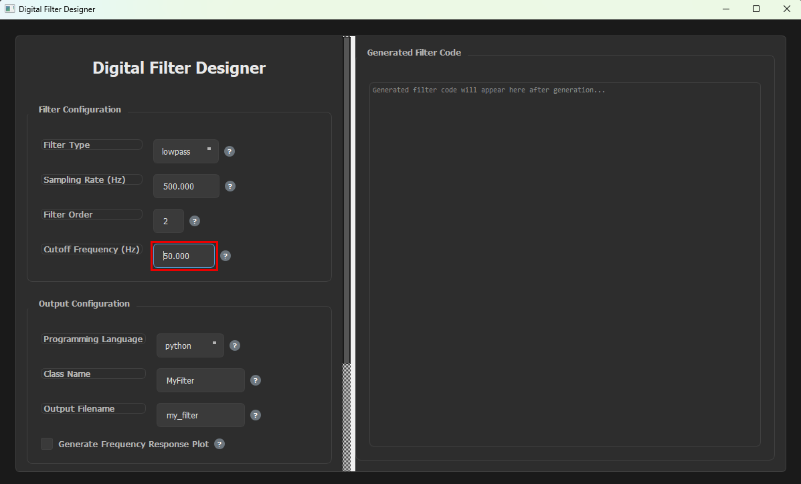
Enter the Cutoff Frequency#
For bandpass and bandstop filters, two fields appear. Enter the lower edge of the band in Low Cutoff Freq (Hz):
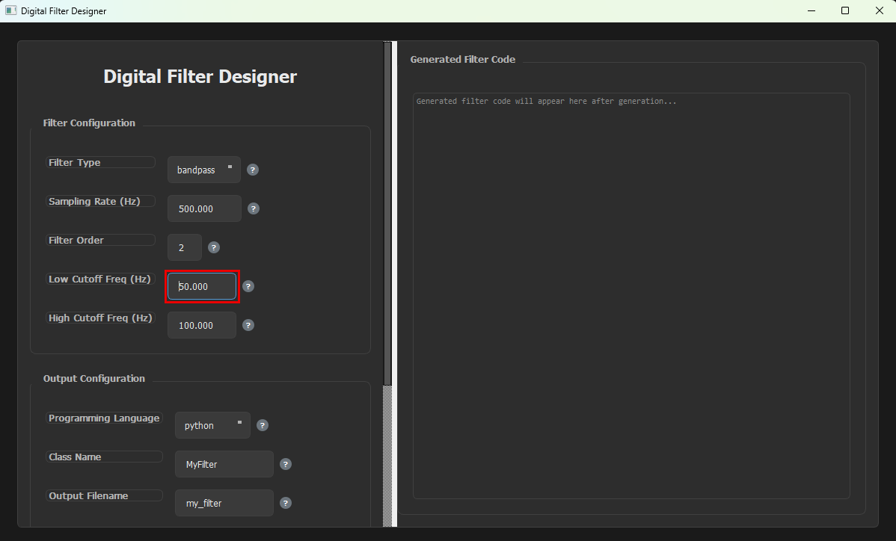
Enter the Low Cutoff Frequency#
Then enter the upper edge of the band in High Cutoff Freq (Hz):
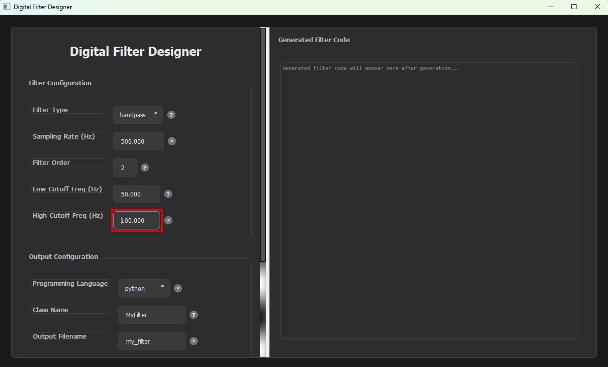
Enter the High Cutoff Frequency#
The low cutoff must be below the high cutoff, and both must be below half of the sampling rate.
Select the Programming Language#
Choose the language to generate the filter in: python, javascript, typescript, c++ or java.
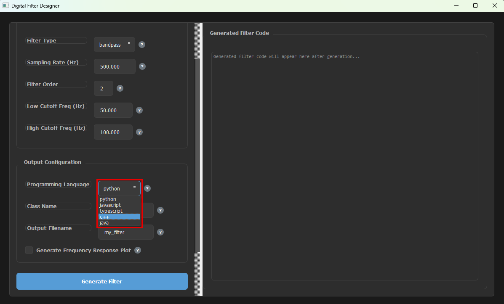
Select the Programming Language#
Enter the Class Name#
The filter is generated as a class, so you can create multiple objects from it, one for each channel of your signal. Each object keeps its own filter state. Enter the name you want for the class, for example EEGFilter.
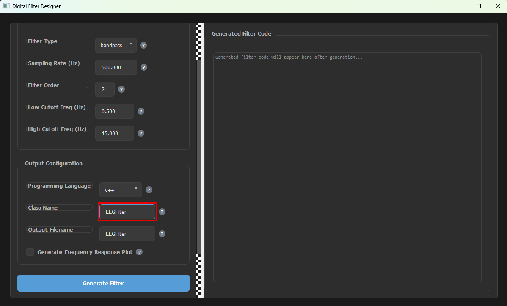
Enter the Class Name#
Enter the Output Filename#
Enter the name of the file the filter is saved to. The extension is added automatically based on the language you selected (.py, .js, .ts, .cpp or .java). The file is saved in the folder you launched the app from, which is the project folder if you followed the steps above.
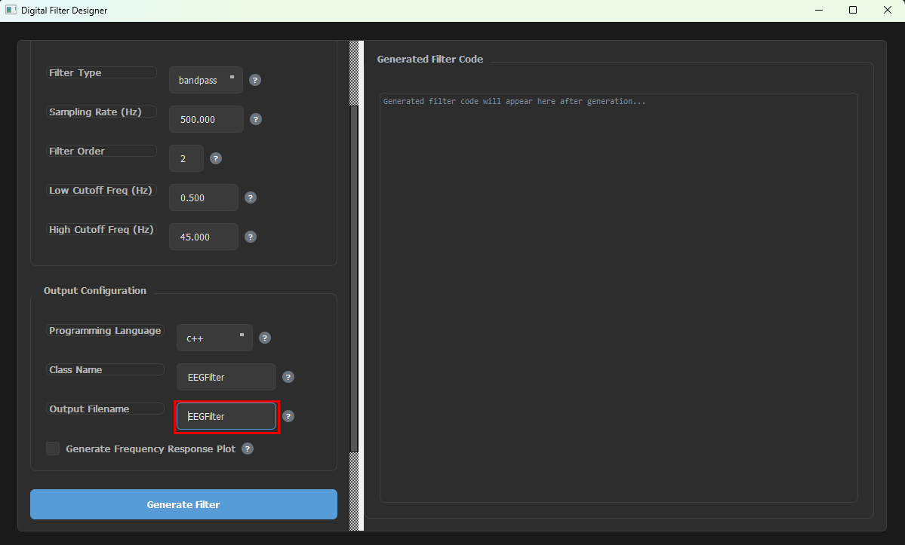
Enter the Output Filename#
Enable or Disable the Frequency Response Plot#
Use the Generate Frequency Response Plot checkbox to choose whether a frequency response image is saved along with the filter. When it is enabled, the plot is saved as <filename>_response.png in the same folder as the filter file. Hover over the ? button next to it for a short description.
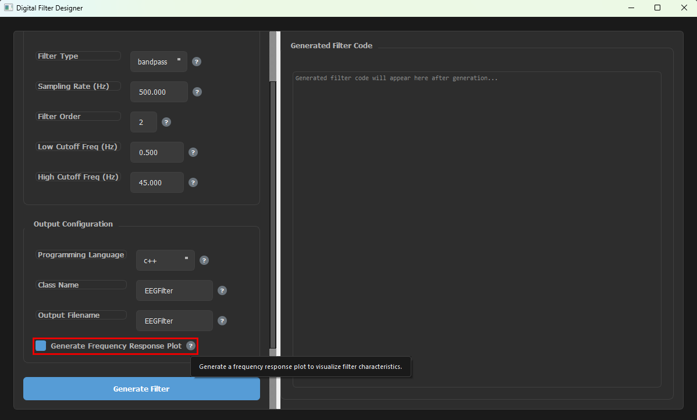
Enable or Disable the Frequency Response Plot#
Generate the Filter#
Click Generate Filter. The generated code appears in the Generated Filter Code panel, the file is saved, and the Status box below the button shows what was created.
The code ends with commented-out usage examples for single-channel and multi-channel use. These are only for reference, so you do not need to copy them. To use the filter, select the generated code in the panel and copy it, or use the saved file.
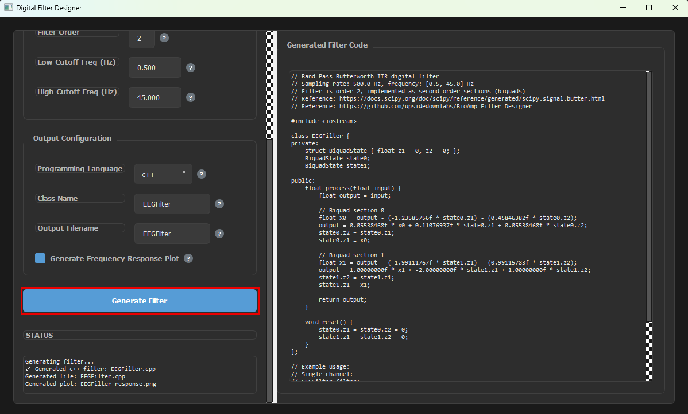
Generate the Filter#
Reference#
The filters are Butterworth IIR filters designed with SciPy: scipy.signal.butter.